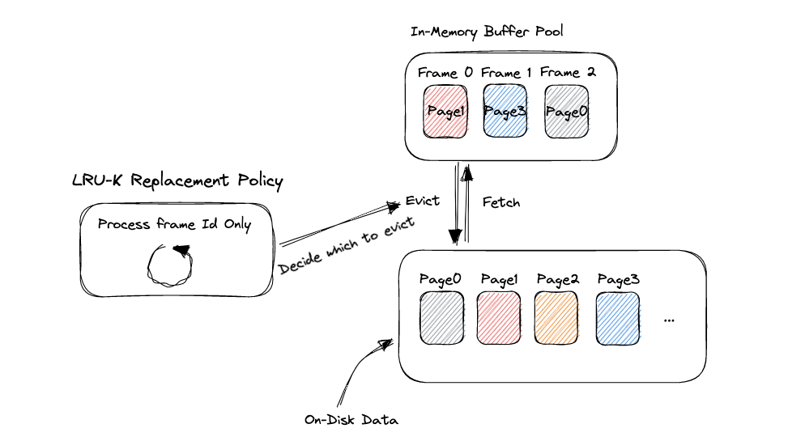
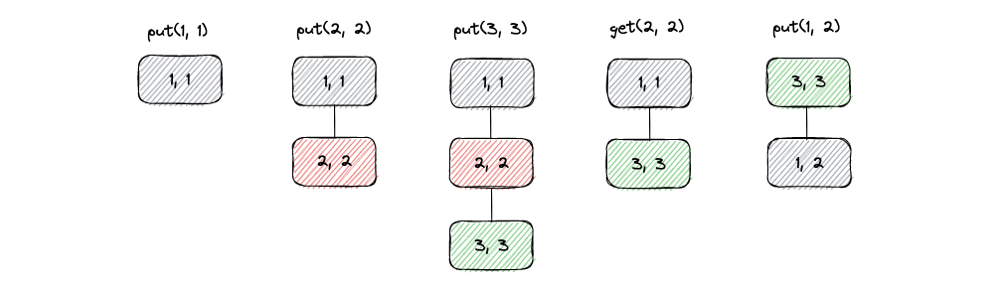
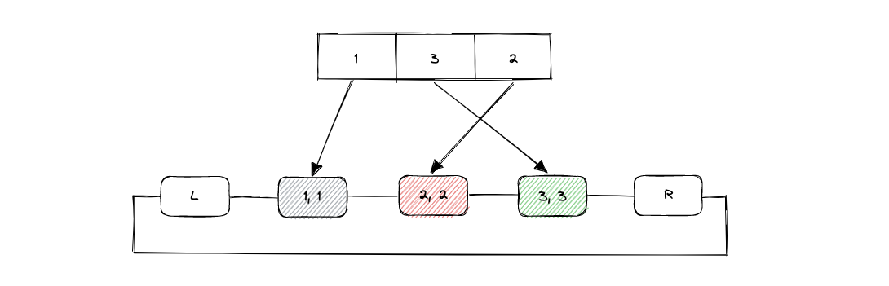
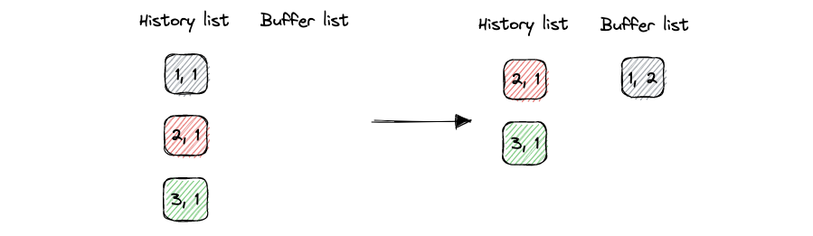
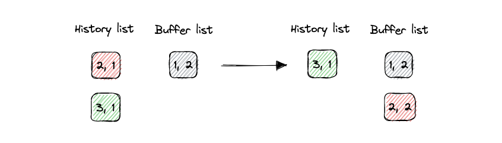
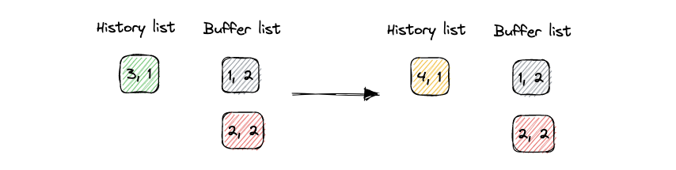
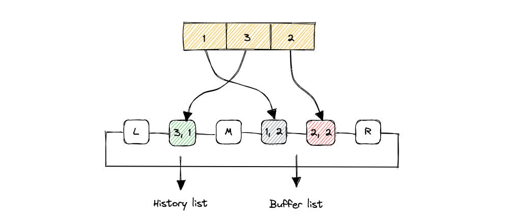

CMU 15-445 LRU-K Replacement Policy
实现LRU-K的时候，先去完成了LeetCode的146题LRU，实现的时候运用了哈希链表结构，题目中要求get和put操作都是O(1)的时间复杂度。一种实现方式就是用STL的list和unordered map，list本质是双向链表，但实现出来最后的结果总是不尽人意。因此将list结构换成自己实现的双向链表，运行起来的速度和内存都优于list的实现。因此在15-445的LRU的实现中，我也采用了自己实现的一个内嵌结构体作为双向链表的基础。总体而言，参考了网上对于LRU-K的讲解之后，对LRU-K的算法操作还是比较清晰的，不像Extendible Hash Table那样一知半解。所以实现起来也很清晰。但由于用的是自己写的双向链表，debug花时间最久的就是内存泄漏问题，因为之前写过的一些项目都没有考虑，因此花了很长时间去定位错误。总体来说是一个教训。
Replacement Policy
缓存驱逐算法的应用场景是，由于内存和硬盘之间读写速度的巨大差异，并且有程序局部性原理的存在，我们想通过保存从硬盘中读取出的东西在内存中，这样一种方法来尽可能减少两者之间速度的差异，提高CPU的利用率和处理速度，减少不必要的等待时间。从硬盘中读取出的数据一定是换存在内存中的，而由于内存的大小局限性，我们不可能无限的存储硬盘的page，甚至只能分配内存的一小部分作为缓存空间来使用。
这样的缓存空间一定是有大小的，有大小就会涉及到缓存存满的问题。如果想要再存放新读入的数据到缓存空间中，必须选择一个内存块将其驱逐出去。把空间给腾出来。选择哪一块驱逐，就是替换算法（replacement policy）所做的事情。一般常见的替换策略有FIFO，LRU以及LFU等等。
下图展现了硬盘数据和内存之间提取（Fetch）和驱逐（Evict）的关系。

上面图片中，Buffer Pool就是缓存数据的池子，最大容量为3个page。Disk上面的Data数不胜数，当需要数据时系统会从Buffer Pool检索，如果检索到了，则直接从内存中提出数据，并且通知LRU-K Replacement Policy组件调用了这个page。如果没检索到，就从硬盘中读取一块。如果此时Buffer Pool满了，那就询问LRU-K Replacement Policy组件，索要一个可以驱逐的frame id号，系统再根据这个frame id从内存中把对应的page重新写回硬盘（NOTE：LRU-K不做任何实际的数据操作，仅仅是记录frame的状态，并根据一定的策略将可以驱逐的frame id号提供给系统）。
LRU and LRU-K
建议还是去做一下力扣146题，通过这道题可以了解LRU的算法流程。LRU其实很简单，用语言表述一句话就是：选择最长时间不访问的page驱逐。话是这么说，实现上还是需要一些技巧的。题目中需要实现两个方法，一个是get一个是put。put是给定一个key，value，将其存入链表中。get操作是给定key，返回一个key对应的value，并删除对应的key/value pair。题目要求两个操作的时间复杂度为O(1)。
链表的插入和删除操作的复杂度为O(1)，但是查找的时间复杂度为O(N)。这就没办法满足get操作的要求。我第一次实现的时候直接用了C++的list容器，结果最后超时了。如果查找满足时间复杂度为O(1)，就需要用哈希数据结构。但哈希表是无序结构，LRU需要有序结构。结合两者的优点，就是哈希链表。查找时索引哈希表，得到对应链表的地址，插入和删除时直接用双向链表的删除即可。
用例子来理解一下LRU的算法。假设LRU最大存储量为3，接下来对算法进行put(1, 1), put(2, 2), put(3, 3), get(2, 2), put(1, 2)的操作。看下图的操作顺序（我实现的方式是，链表头是要驱逐的元素，链表尾部是最新使用过的元素）。

当然这只是双向链表的视角，别忘了，为了实现O(1)的get操作，我们还有一个哈希结构。下面是一个哈希链表结构的示意图。

新增的头节点L和尾节点R可以用来直接对头部和尾部进行操作，头部要移除，尾部要插入，就不必去寻找头尾节点了。这两个头尾节点在之后的LRU-K算法实现中会扩展成头部、中间和尾部节点，关于这部分之后在叙述我的想法。
Leetcode的代码实现如下：
1 |
|
LRU-K算法是LRU算法的改进版。LRU算法存在的问题是，当存在大量的一次性操作时，会把历史的缓存冲刷掉，而新进入buffer pool的page有可能之后不会再访问了，被冲刷掉的page是之前保留下来的比较“有用”的page，这就是缓存污染问题。
LRU-K的思路是，永远最先驱逐访问次数小于K次的page。网上的很多讲解是直接维护两个链表，一个叫做history list，另一个叫buffer list。新加入的page总会先进入history list，当访问次数等于指定的次数K次时，就会从history list删除，并移动到buffer list的尾部（这里还是假设尾部的page是最新使用的，头部page是最近最久未使用的）。
通过例子来理解一下这个LRU-K算法，首先插入key=1，2，3，它们的value分别是1，1，1。原因是这里的value我用它来记录K的次数，也就是访问的次数。现在假设整个history list和buffer list最多存储三个page，就是buffer pool的大小，且K=2。首先我们访问key=1的page，那么对应的node的value就会变为2，一旦等于了K的值，说明这个page是可能被经常访问的，就把它移入buffer list。

接着我们再访问key=2的page。

Buffer list服从LRU算法，History List可以服从任意替换算法，在实验手册中，要求驱逐最早进入history list的page，采用的是FIFO策略（刚开始我实现的history list是LRU策略，结果会导致Evict Test无法通过，一定要注意history和buffer的策略不一样）。
接着我们尝试插入key=4的page，结果发现buffer pool满了（总共的空间为3，history占1，buffer占2），那么就需要对某一个page进行缓存驱逐，根据原则：永远最先驱逐访问次数小于K的page。所以先驱逐掉3，再加4到history list中。

History list采用FIFO，由于History list只剩下3了，那么只能驱逐3。如果继续访问4，那么4会被移入Buffer list中，此时buffer pool也已经满了。如果想再插入一个新的page，需要缓存驱逐，这时就要从buffer list里面根据LRU算法进行驱逐了，具体的例子可以自行画一下。
以上就是LRU和LRU-K算法的解释。
LRU-K Implementation
实现15-445 LRU-K任务的时候，我采用的还是使用自己定义的结构体Node和STL的unordered_map结构，实现哈希链表。链表不使用STL的list的一个原因是Leetcode跑下来的结果优于使用STL的list，性能方面会更好；另一个原因就是结构体定义数据和操作的自由度高，可以根据自己的想法来实现。缺点就是，要注意内存泄漏问题（由于之前经验很少，此处debug时间花的很多）。
实现思路总体继承Leetcode的解法，定义一个有key，value，左右指针的节点，同时为了区分每一个节点是否evictable，加如了一个bool变量。其中，key存储对应的frame_id，value代表被访问的次数，evictable表示这个节点是否可以被驱逐。
设计双链表的时候，除去左节点L和右节点R，我还加入了一个中间节点M，作为history list和buffer list的分割节点。两种list连接在一条双向链表上，再用unordered map索引。
具体的效果如下图：

然后对history list和buffer list分别维护一个计数器，计算当前包含的节点数量，可用来判断是否需要驱逐缓存（注意需要迭代判断，并不能直接取L节点或M节点的下一个，因为下一个节点很有可能是non-evictable的）。
线程安全方面是直接一把大锁锁住所有操作。并没有细致的对每一个结构进行优化。
踩坑记录
最主要的问题就是内存泄漏问题，真的是种种内存泄漏。最大的原因就是，程序结束之后，有一些内存中的节点，没有被人为的Remove或者Evict，导致结束程序后将这些节点遗留下来，造成的内存泄漏。解决方案就是在Replacer的析构函数里实现一个强制去除当前链表所有节点的程序（包括non-evictable，因为之前实现的是直接循环Evict，再删除L，M和R，但总还是有内存泄漏问题，原因在于Evict仅仅驱逐evictable数据，析构函数调用它会删不干净）。还有的内存泄漏问题就是use after free问题。这个问题值得是在释放内存空间后还尝试使用这个内存空间。经典出现的地方在于，删除节点的时候要伴随哈希表对应数据的删除。需要注意的是哈希表的
erase方法：如果用key删除，且value存储的是指针，那么仅仅会删掉哈希表中的数据，指针所指向的内存是不会被删除的；如果用迭代器删除，我们首先应当删除迭代器的second所指向的内存空间，然后再删除迭代器的first对应的key。1
2
3
4
5
6
7
8// hash_map_<int, Node*>
auto it = hash_map_.find(frame_id)；
hash_map_.erase(it->first);
EraseNode(it->second); // 报错use after free，因为已经删除了对应的数据，迭代器不可用，it无法索引到
Node *p = L->right; // 取出头节点
hash_map_.erase(p->key)；
EraseNode(p)； // 成功，因为hash map只删除了表中存储的数据，原Node内存还存在History list用的是FIFO，Buffer list采用LRU。我开始都用的LRU，导致EvictTest报错。
- 注意要实现自己的双向链表的删除，插入和移动的相关函数。